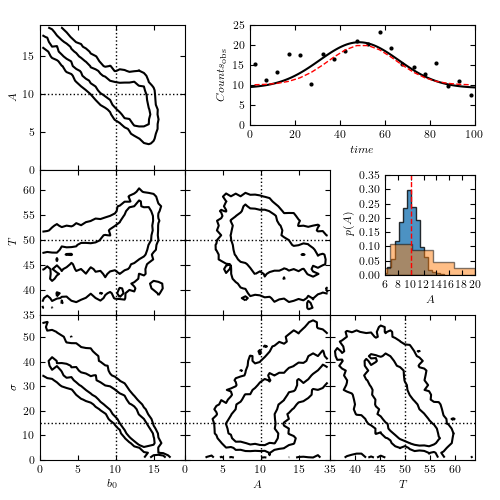

An illustration of Hierarchical Bayes modeling for a Gaussian burst with background¶
Figure 5.28
An example of hierarchical Bayes modeling: estimate the position, amplitude, width and background for a Gaussian burst. Then assume that a large population of such bursts almost fully constrains the background and compare the marginal distributions of amplitude for the two cases.
{kind=link}
@pickle_results: using precomputed results from 'gauss.pkl'
# Author: Zeljko Ivezic
# License: BSD
# The figure produced by this code is published in the textbook
# "Statistics, Data Mining, and Machine Learning in Astronomy" (2019)
# For more information, see http://astroML.github.com
# To report a bug or issue, use the following forum:
# https://groups.google.com/forum/#!forum/astroml-general
import numpy as np
from matplotlib import pyplot as plt
import pymc3 as pm
from astroML.plotting.mcmc import plot_mcmc
from astroML.utils.decorators import pickle_results
# ----------------------------------------------------------------------
# This function adjusts matplotlib settings for a uniform feel in the textbook.
# Note that with usetex=True, fonts are rendered with LaTeX. This may
# result in an error if LaTeX is not installed on your system. In that case,
# you can set usetex to False.
from astroML.plotting import setup_text_plots
setup_text_plots(fontsize=8, usetex=True)
def gauss(t, b0, A, ssig, T):
"""Gaussian Point Spread Function"""
y = A * np.exp(-(t - T)**2/2/ssig**2) + b0
return y
def ssig(log_ssig):
return np.exp(log_ssig)
# ----------------------------------------------------------------------
# Set up toy dataset
np.random.seed(0)
N = 20
b0_true = 10
A_true = 10
ssig_true = 15.0
T_true = 50
sigma = 3.0
t = np.linspace(2, 98, N)
y_true = gauss(t, b0_true, A_true, ssig_true, T_true)
y_obs = np.random.normal(y_true, sigma)
# ----------------------------------------------------------------------
# Set up MCMC sampling
@pickle_results('gauss.pkl')
def compute_MCMC_results(draws=5000, tune=1000):
with pm.Model():
b0 = pm.Uniform('b0', 0, 50)
A = pm.Uniform('A', 0, 50)
T = pm.Uniform('T', 0, 100)
log_ssig = pm.Uniform('log_ssig', -10, 10)
y = pm.Normal('y', mu=gauss(t, b0, A, ssig(log_ssig), T),
sd=sigma, observed=y_obs)
traces = pm.sample(draws=draws, tune=tune)
return traces
traces = compute_MCMC_results()
mean_vals = pm.summary(traces)['mean']
mean_vals['ssig'] = ssig(mean_vals.pop('log_ssig'))
labels = ['$b_0$', '$A$', '$T$', r'$\sigma$']
true = [b0_true, A_true, T_true, ssig_true]
limits = [(0.0, 19.0), (0, 19), (35, 64), (0.0, 59.0)]
# ------------------------------------------------------------
# Plot the results
fig = plt.figure(figsize=(5, 5))
fig.subplots_adjust(bottom=0.1, top=0.95,
left=0.1, right=0.95,
hspace=0.05, wspace=0.05)
# This function plots multiple panels with the traces
plot_mcmc([traces[i] for i in ['b0', 'A', 'T']] + [ssig(traces['log_ssig'])],
labels=labels, limits=limits,
true_values=true, fig=fig, bins=30, colors='k')
# plot the model fit
ax = fig.add_axes([0.5, 0.75, 0.45, 0.20])
t_fit = np.linspace(0, 100, 101)
y_fit = gauss(t_fit, **mean_vals)
ax.scatter(t, y_obs, s=9, lw=0, c='k')
ax.plot(t_fit, y_fit, '-k')
ax.plot(t, y_true, ls="--", c="r", lw=1)
ax.set_xlim(0, 100)
ax.set_xlabel('$time$')
ax.set_ylim(0, 25)
ax.set_ylabel(r'$Counts_{\rm obs}$')
# plot the marginal amplitude distributions with b0 fit and assumed known
ax = fig.add_axes([0.77, 0.45, 0.18, 0.20])
ax.plot(t, y_true, ls="--", c="r", lw=1)
ax.set_xlim(6, 20)
ax.set_xlabel('$A$')
ax.set_ylim(0, 0.35)
ax.set_ylabel(r'$p(A)$')
tb = traces['b0']
tA = traces['A']
# simulate HB constraint from "other" sources as
tAb = tA[np.abs(tb - b0_true) < 0.5]
# compare marginal amplitude distributions
ax.hist(tAb, 15, density=True, histtype='stepfilled', alpha=0.8)
ax.hist(tA, 15, density=True, histtype='stepfilled', alpha=0.5)
ax.plot([10.0, 10.0], [0.0, 1.0], ls="--", c="r", lw=1)
plt.show()